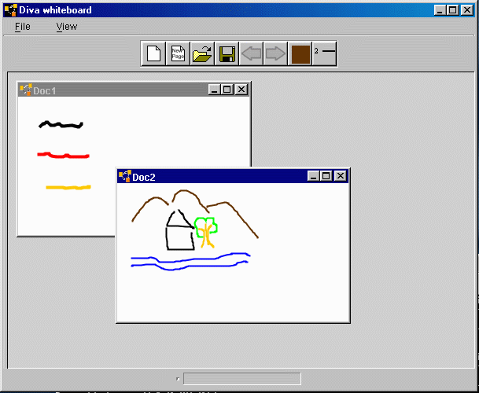

|
|
|
|
selection |
deletion |

The whiteboard demo is a digital whiteboard application that supports basic editor features and editing commands using pen gestures.
Whiteboard features:
When the program starts up, it shows a blank page on the whiteboard canvas. The user can add more pages by clicking on the new page icon on the toolbar and traverse the pages using the previous and next buttons. The right-most two icons allows the user to change pen color and width. The toolbar is tearable, therefore it can be dragged to a different position.
The user can create multiple documents by clicking on the left most document icon. Each document can be saved to a file in XML format (.sml) which can be loaded back in later. One can also save a sketch in JPEG format. This is done by choosing "Save as..." from the file menu and selecting ".jpeg" in the type field. This saves the current viewing page of the document to a JPEG file.
In the default setup, two types of gestures are supported, check and scribble. The user can draw a check on a figure to select it. When a figure is selected, a set of grab handles appear around it which can be used to rescale the figure. The user can also click on the figure and drag it around. To delete a figure, simply scribble over it. The following picture shows the selection and deletion gestures.
|
|
|
|
selection |
deletion |
The recognizer for the deletion gesture is direction independent, so the gesture can be drawn starting from either end. The recognition for the selection gesture is direction dependent, therefore the gesture has to be drawn in the same way as it is trained.
Note
The gesture recognition in this demo currently support single-stroke gestures, which means that in order for a
gesture to be recognized it has to be completed in one stroke (a path formed from pen down to pen up). Also the
recognition is direction-dependent, therefore a gesture has to be drawn in the same way as it is trained. The lack
of multi-stroke gestures and direction independence is not a shortcoming of the recognition archicture, but rather
this particular recognizer implementation. See the package documentation for details.